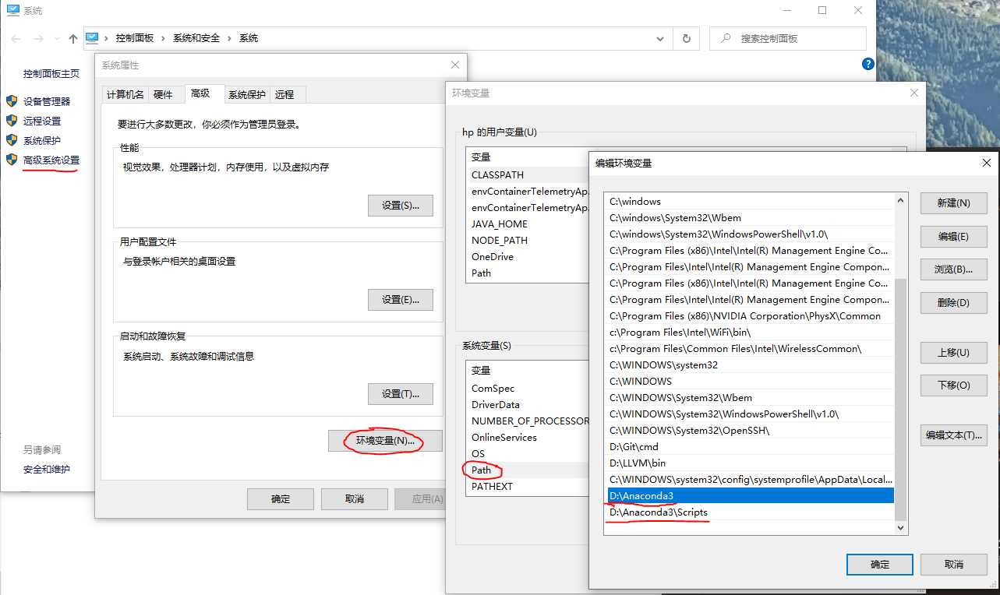

# VScode 配置 python 自动提示
# linux
查看 Linux pip install 命令安装包的路径如
/usr/local/lib64/python3.6/site-packages/.
如果不清楚 pip 安装包的路径，可以执行两次pip install numpy, 第二次执行就可以看到默认 pip 安装包的目录.确定 python 安装目录如
/usr/lib64/python3.6/设置 VScode
文件 – 设置 – 首选项，搜索 autoComplete，点击 "在 settings.json 中编辑"，添加模块路径
"python.autoComplete.extraPaths": [
"/usr/local/lib64/python3.6/site-packages/",
"/usr/lib64/python3.6/",
]
修改之后重启 VScode, 就可以了
# windows
安装 Anaconda
windows 配置 Anaconda 安装路径如下:

- VScode 文件 – 设置 – 首选项，搜索 autoComplete，点击 "在 settings.json 中编辑"，添加模块路径
Note: 有时候设置 VScode 的 python 模块自动提示不成功，原因是要设置 Anaconda 路径到上图中下面的
系统变量的Path, 再重启 cmd 端口或 powershell 输入python即可查看到正常输入，重启 VScode 后 python 模块即可自动提示.
"python.autoComplete.extraPaths": [
"D:\\Anaconda3\\Lib\\site-packages",
"D:\\Anaconda3\\Scripts",
],
"python.autoComplete.addBrackets": true,
"python.jediEnabled": false,
修改之后重启 VScode, 就可以了
# python 代码保存自动格式化
VScode 创建 python 文件会自动提示安装 autopep8, 或者通过以下命令进行安装
pip install -U autopep8